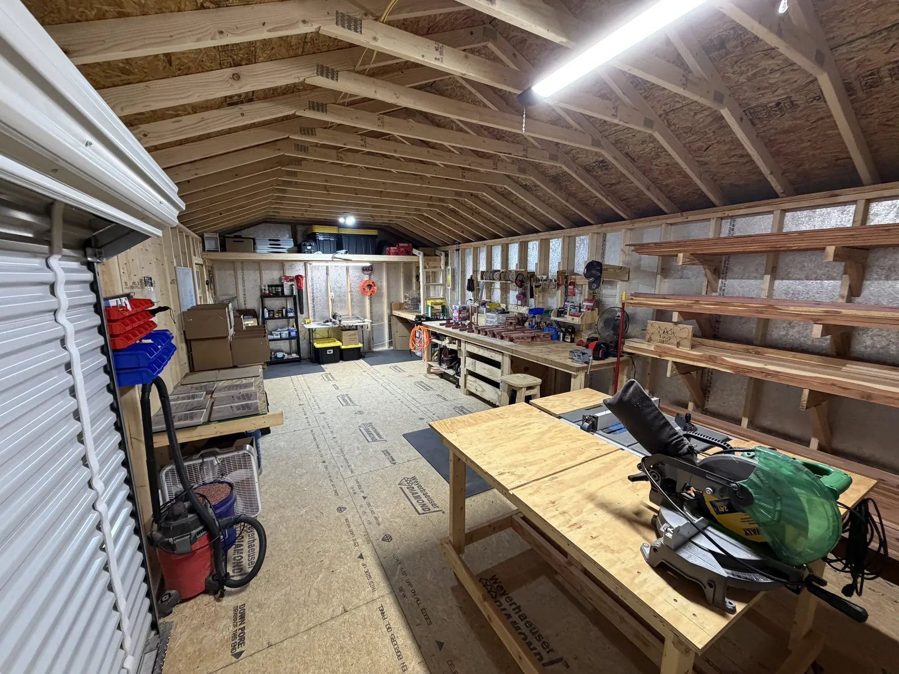

My dad was a carpenter for twenty-five years, and his dad before him. My daughter's out at the bench with me now.
My dad's name is David. That makes me Harley, David's son — and yes, I've heard it my whole life. It stopped being a joke a long time ago and started being the reason I put my own name on the work.
He was a carpenter for twenty-five years. I grew up around the smell of cut lumber and the sound of somebody measuring twice. Most of what I know I learned standing next to him, being handed things and told to hold still.
His dad taught him. He taught me. Now she's out there with me.
My daughter's at the bench with me these days. She's not big enough to run anything sharp yet, but she can pick a finish and tell me when a corner's wrong, and she's usually right.
I drive an LP gas truck during the day. The woodworking happens after that — evenings, weekends, whenever there's light and the bench is clear. There's no crew here and no machine turning out a thousand of the same thing. There's a shed, a bench, and me.
That's why nothing on this site is mass-produced, and why I don't build things nobody ordered. Everything you see got made because somebody asked for it.

There's a coffee can on the shelf full of nails. Some of them came out of boards I pulled apart, some came through my grandad's toolbox, and I couldn't tell you which are which anymore.
They're versatile creatures. A bent nail straightens. A short one holds a jig. And every so often one goes into something I'm building, which means a piece of somebody's old work ends up inside somebody's new thing. That's about as close to a philosophy as I've got.
A good bit of my lumber is reclaimed — pallet wood and old barn boards, when I can get hold of them and they're still sound. I pull the nails, plane it back and see what's underneath. There's usually more character in a hundred-year-old barn board than in anything I could buy new.
I won't tell you it's everything I use, because it isn't. Some pieces need new cedar to last outside, and when they do, that's what goes in them. Offcuts don't get binned either — the cut-off from one swing arm ends up as the brace on the next one.
If you want something made, I'm the one who answers the phone.